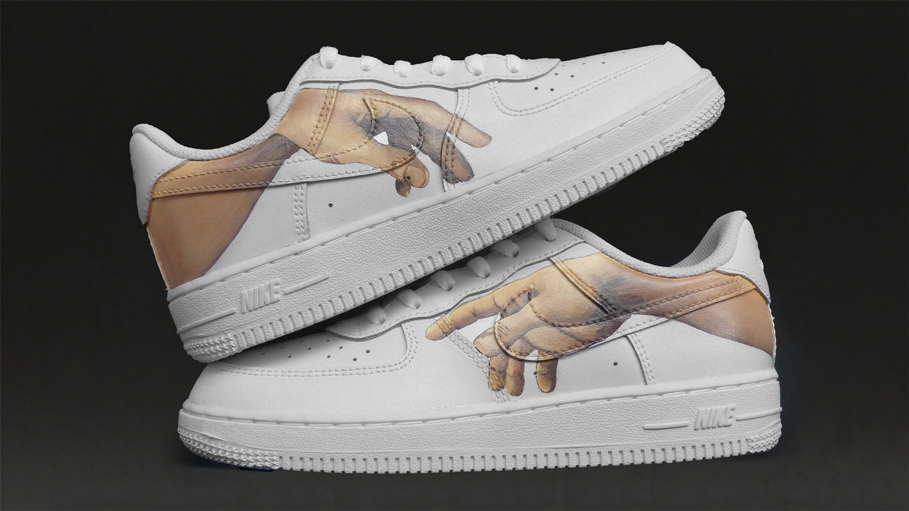
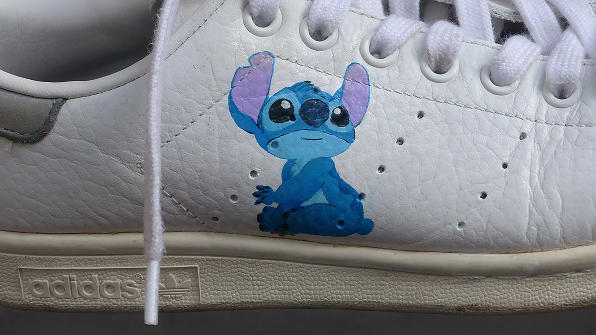
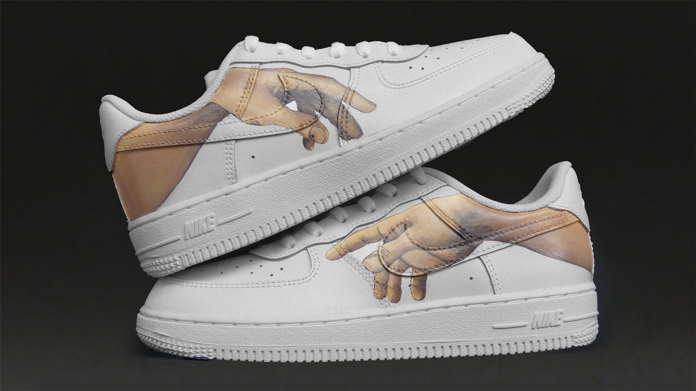
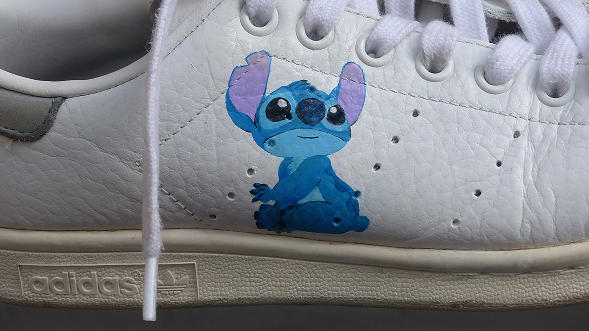

shoe lé
branding e personalização de sapatilhas,
porto 2020.

 



Shoe Lé foi um projeto de personalização de sapatilhas. Foi uma colaboração com um amigo (Eduardo Rothes), onde pegámos no nosso interesse comum por sapatilhas e juntámos as minhas capacidades artísticas e as suas capacidades sociais.
Trabalhando com cada cliente, criei um design diferente para cada personalização, podendo ir desde recriações de obras/personagens icónicas, até desenhos originais meus. Todas as pinturas foram feitas por mim, bem como o branding (logótipo, ilustrações, autocolantes).